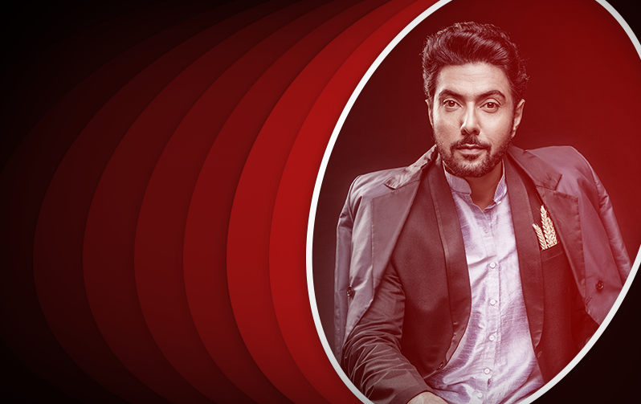
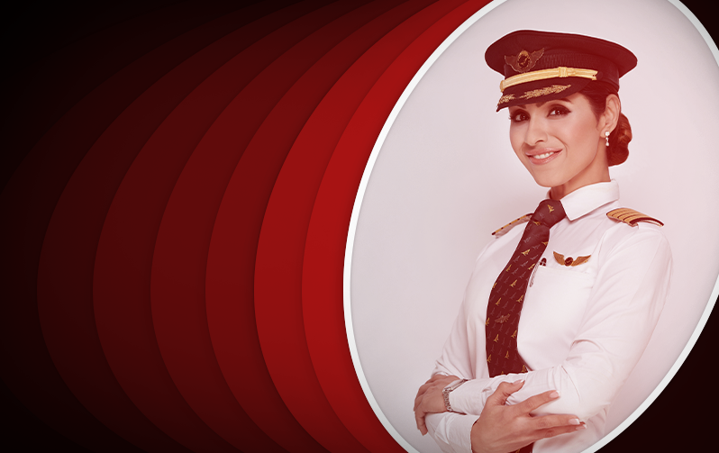
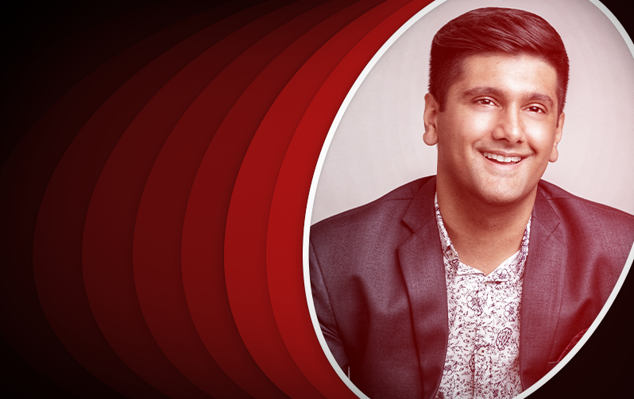
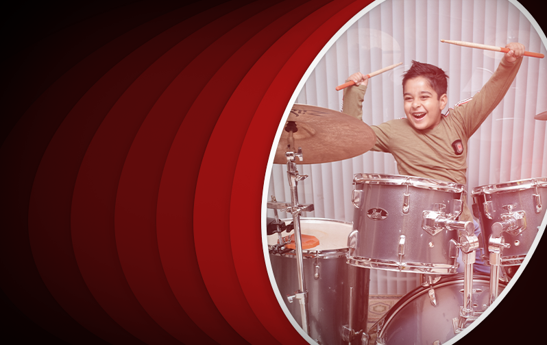
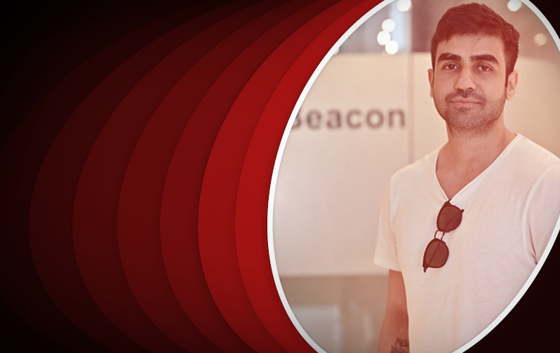
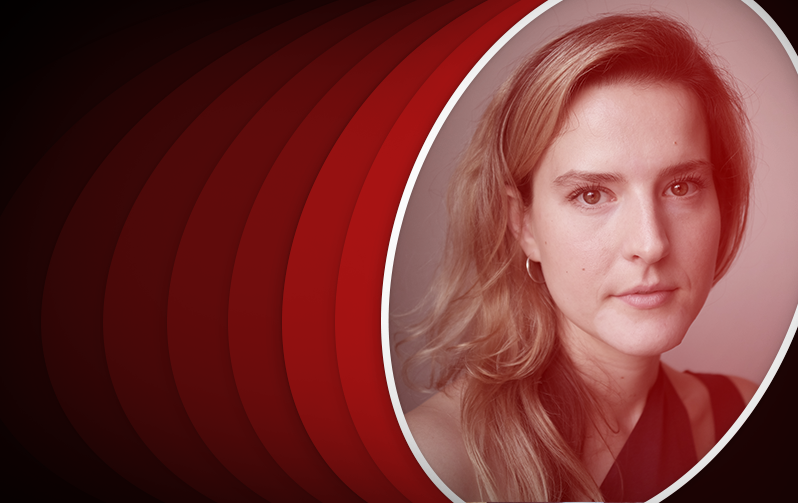
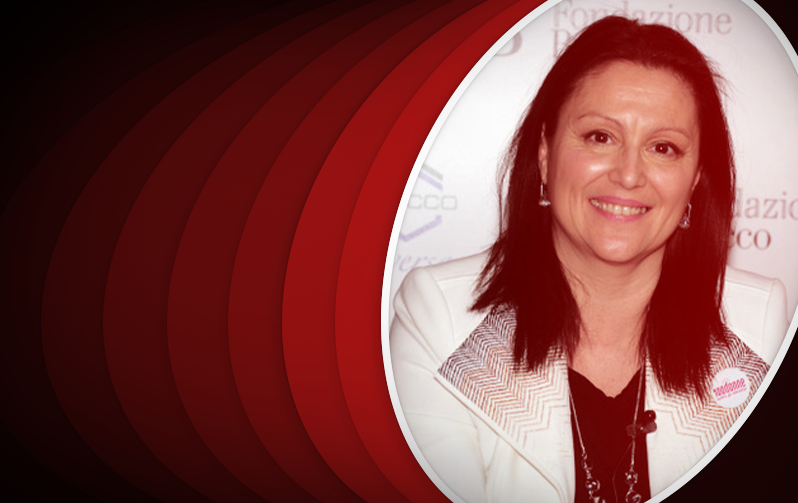
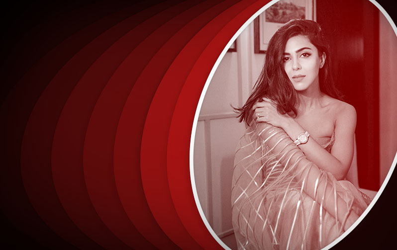

Speaker Details
Here is some more information about the speakers

Ranveer Brar
We are proud to present our first speaker; the talented and charismatic chef Ranveer Brar. From a young boy on the streets of Lucknow to an international celebrity in the culinary world, Chef Ranveer’s story is one of dedication and perseverance. Founder of countless successful restaurants like Morisco, il Camino, Fishtail, in India as well as Banq in the US, Chef Ranveer is also the host of dozens of TV shows, and is a current judge of MasterChef India. His creativity, love for experimentation and eye for detail combined with his charming sense of humour make him one of the greatest Chefs of the country, and his videos never fail to bring a smile on his viewers’ faces.

Zoya Agarwal
At TEDxBITSHyderabad, we believe that people should constantly strive to look for ways to better themselves and to create a more inspiring world for them and the future. We believe that the next speaker is the personification of these noble ideals. Captain Zoya Agarwal carries with her inspiring stories of following one's dreams irrespective of the barriers imposed on you. Having spent a childhood gazing up at the skies dreaming of becoming a pilot - Captain Zoya worked tirelessly to make her childhood dream her reality. Not to be stopped there, Captain Zoya continued breaking through glass ceilings. From becoming the youngest woman commander of the Boeing 777 to becoming the first woman commander of Air India to fly over the North Pole - Captain Zoya's path-breaking strides create pause for awe.

Travin Singh
From incorporating leftovers into meals to founding a food tech startup, Travin Singh’s journey into the realm of food waste management and sustainability is a remarkable one. It was while serving in the Singapore Navy that Travin had his first eureka moment. Seeing opportunity in the large amounts of unsold bread thrown out daily, he perfected the art of brewing, starting from YouTube and painstakingly improving his recipe. Four years later, CRUST Group was born, their first product being a bread based beer. Today, the company aims to fight the perennial issue of food loss and has wonderful ambitions - to reduce global food waste by 1% by 2030. Presenting TEDxBitsHyderabad 2021’s keynote speaker, a passionate food waste fighter driving the upcycled food movement, the creative and dynamic Travin Singh.

Devaagyh Dixit
Devaagyh Dixit, India’s youngest and fastest drummer, made seven world records in a single day at the age of six. When Devaagyh started playing the drums at the age of two, his remarkably intuitive grasp of music and flair for learning that shone through was this wunderkind’s claim to fame. He made his first record at the age of 1 year and 10 months old, rightfully earning the title of ‘Grandmaster’ by the World Record University in London for his unmatched skill. Having performed over 160 drum solos by the mere age of six at both state and national level events, Devaagyh also plays an assortment of other instruments like the piano, guitar, conch, dombek, tabla and ghatam.

Nikhil Kamath
Our next speaker at TEDxBITSHyderabad 2021 is a man who has risen through the ranks and left a firm indelible mark on the Indian Financial Markets. Just aged 34, and dubbed 'India's youngest new billionaire', Nikhil Kamath has walked and conquered many paths in his life. From leaving school to play chess internationally to teaching himself stock trading, Nikhil is the embodiment of grabbing life by the horns and directing one's own life. In 2010, Nikhil, along with his brother Nithin Kamath, created Zerodha - a revolutionary start-up that would grow to become India's largest brokerage platform.

Monika Seyfried
Monika Seyfried, an Interaction Designer who works across the disciplines of science, ethics and futures, has a strong background in art, photography and filmmaking. Her research focuses on how living systems and the natural world can help us to establish new perspectives on the future of technology and ecosystems. Monika engages at the intersection of emerging technologies, digital media, and the natural environment by creating sensory-rich, interactive spaces through her design work. Her passion is to build immersive experiences, mixed reality that blends the digital and physical worlds, work with a speculative mindset, and experiment with design approaches. Monika is currently a researcher at the Copenhagen Institute of Interaction Design (CIID), and one of her ongoing research initiatives is Grow Your Own Cloud, which began as a speculative exploration of DNA data storage methods.

Dr. Patrizia Azzi
We are enthralled to present to you our next speaker Dr Patrizia Azzi, a true inspiration for women in STEM and the student community. Dr. Patrizia Azzi is an experimental particle physicist at the Istituto Nazionale di Fisica Nucleare (INFN), Italy. Her discoveries and contributions in unravelling the mysteries of the universe are countless. From her role in the Higgs discovery as the coordinator of the "Physics and Performance Data", to leading the studies for the determination of physics performance of an upgraded CMS detector and being a proponent of the project for a Future Circular Collider at CERN, Dr Azzi’s 20+ years of experience in the STEM field is aweinspiring and truly motivating for the young minds out there! Driven by her relentless passion, she has authored more than 1000 publications, with some prominent contribution with 500+ citations. We are pleased to have Dr Azzi share her ardent journey in elucidating the unknown.
